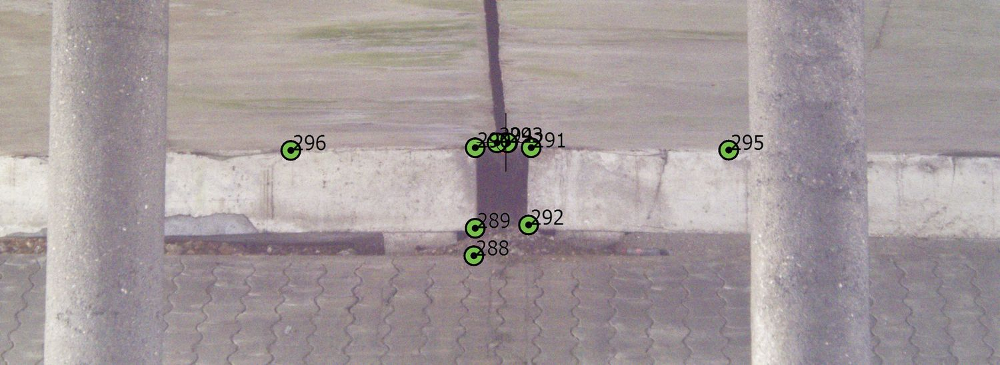

Mesurer le mouvement, pas l'état
L'auscultation ne dit pas si un ouvrage est solide — c'est l'affaire de l'ingénieur structure. Elle dit s'il bouge, de combien, et à quelle vitesse.
Le principe est simple et exigeant : on installe des cibles ou des repères fixés à demeure sur l'ouvrage, on les mesure une première fois pour établir l'état de référence, puis on répète la mesure à intervalles définis.
La comparaison des séries donne le déplacement de chaque point : en plan, en altitude, ou dans les trois dimensions. Ce qui compte n'est pas la position absolue mais la variation — et c'est pourquoi la méthode doit rester rigoureusement identique d'une campagne à l'autre.
Nous mesurons depuis des stations de référence situées hors de la zone d'influence des travaux, elles-mêmes contrôlées à chaque campagne.
Les cibles de contrôle

Ce que produit une campagne
Un rapport d'auscultation n'est pas un avis : c'est un tableau de chiffres, daté, accompagné de ses conditions de mesure.
Il comporte le plan d'implantation des cibles avec leur numérotation ; le tableau des mesures de la campagne et le rappel des campagnes précédentes ; les déplacements calculés par rapport à l'état de référence ; l'incertitude de mesure, sans laquelle un déplacement n'a pas de sens.
Un mouvement n'est significatif que s'il dépasse l'incertitude. Annoncer un déplacement d'un millimètre avec une incertitude de deux millimètres n'aurait aucune valeur — et nous ne le faisons pas.
Le rapport mentionne également les conditions : date, heure, température, état du chantier voisin. Ce sont elles qui expliquent souvent les variations apparentes.
L'état des lieux avant travaux
C'est l'usage le plus fréquent, et le plus utile : fixer l'état géométrique d'un bâtiment voisin avant que le chantier ne commence.
Un immeuble mitoyen d'une opération de construction présente presque toujours des désordres antérieurs — fissures anciennes, affaissements, décollements. Sans état de référence initial, il devient impossible de distinguer ce qui existait de ce que les travaux ont causé.
Le relevé initial fixe la situation de départ. Les campagnes suivantes disent si quelque chose a bougé, et de combien. C'est une protection pour le maître d'ouvrage comme pour le voisin.
La démarche s'articule souvent avec un référé préventif, procédure par laquelle un expert est désigné avant travaux pour constater l'état des avoisinants.
Les questions qu'on nous pose
À quelle fréquence faut-il mesurer ?
Cela dépend du risque et de la phase des travaux. Une surveillance courante se fait mensuellement ; pendant les phases sensibles — terrassement profond, rabattement de nappe, battage — le rythme se resserre à la semaine, voire au jour. Le plan de surveillance se définit au départ, avec le maître d'œuvre.
Quelle précision atteignez-vous ?
De l'ordre du millimètre sur des cibles bien posées, mesurées depuis des stations de référence stables, dans des conditions comparables. Nous indiquons systématiquement l'incertitude associée : un déplacement inférieur à celle-ci n'est pas interprétable.
Les cibles abîment-elles la façade ?
Elles sont de petite taille et se posent par collage ou par une fixation légère. Sur les bâtiments sensibles ou protégés, nous privilégions les cibles collées et les points naturels — angles, arêtes, éléments de modénature — mesurés sans contact.
Pouvez-vous reprendre une surveillance commencée par un autre ?
Oui, à condition de disposer de l'état de référence, du plan des cibles et de la méthode employée. Sans ces éléments, les nouvelles mesures ne seraient pas comparables aux anciennes, et il faudrait repartir d'un nouvel état initial — ce que nous dirions clairement.
Un ouvrage à surveiller ?
Le cabinet intervient à Mantes-la-Jolie, à Limay et dans toute la vallée de la Seine. Décrivez-nous la situation et le calendrier des travaux : nous vous proposerons un plan de surveillance et une fréquence adaptés.